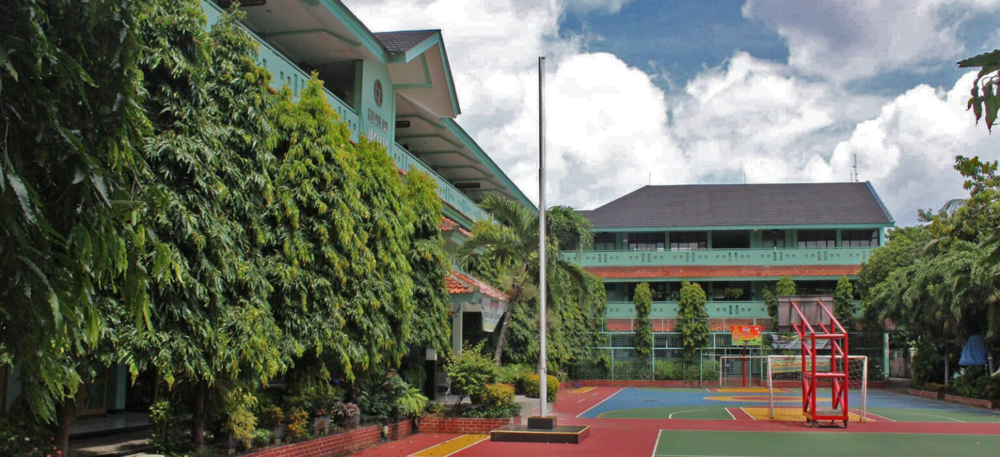

Selamat Datang di SMA NEGERI 1 CERIA
SELALU CERIA SEPANJANG MASA!!
::: Documents :::
| Home
| Visi & Misi
| Program Keunggulan
| Fasilitas
| Ekstra Kurikuler |
EKSTRAKURIKULER SMANSARIA

- KIR dan Riset
- Robotik
- Animasi
- Pramuka
- PMR
- PKS
- Bola Volly
- Futsal dan Sepak Bola
- Basket
- Seni Musik
- Tari
- Paskibra
- Taekwondo